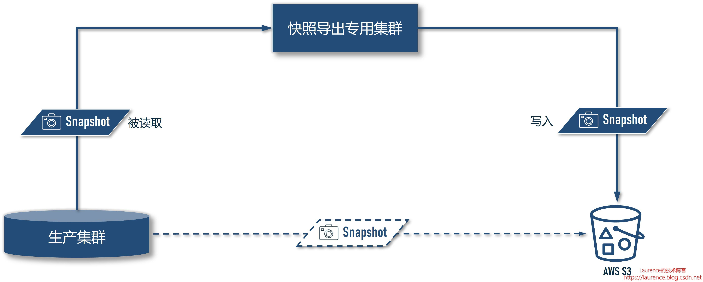
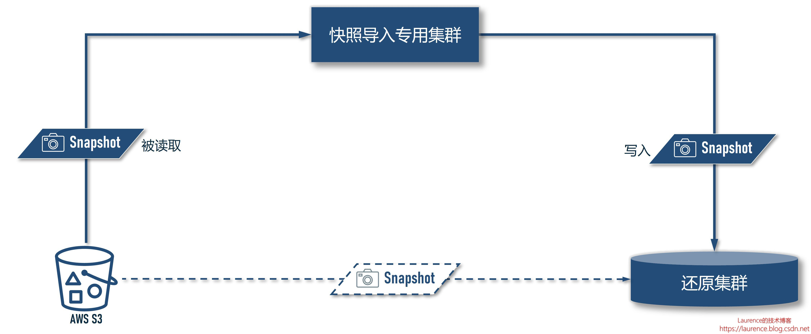
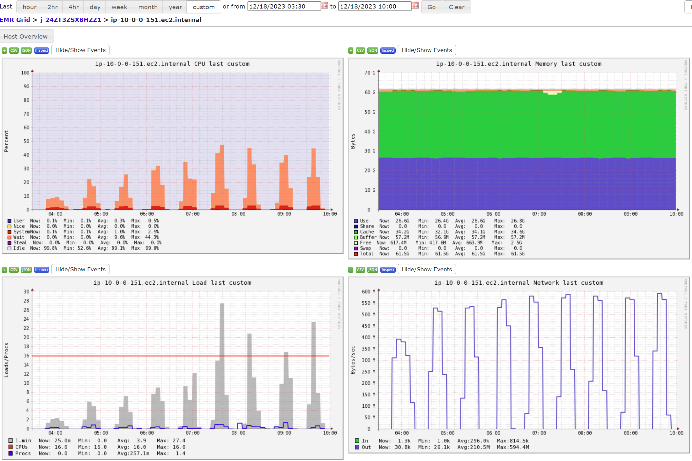

HBase 例行灾备方案：快照备份与还原演练
该方案是为某用户定制的 HBase 灾备方案，方案本身具有很好的适用性，可以复用于常规 HBase 灾备场景。用户对 HBase 的灾备工作非常重视，每周会对 HBase 进行一次全量备份，将快照上传至 S3 保存，同时，在消息队列和其他数据库中保存着两周以内的增量数据，当 HBase 宕机时，会先还原快照将数据库恢复至一周内某一时刻的全量状态，然后再从其他系统读取一周内的增量数据进行补录，直至数据追平。本文将重点讨论 HBase 基于快照的例行备份和灾后恢复操作，并给出详细的解释和操作脚本。更多快照导入导出操作的详细介绍可参考本文姊妹篇: 《HBase 超大表迁移、备份、还原、同步演练手册：全量快照 + 实时同步（Snapshot + Replication）不停机迁移方案》
1. 方案 架构
由于 HBase 的快照导入、导出是一个基于 Yarn 的 Map-Reduce 作业，而生产集群是一个专职的 HBase 集群，不宜为 Yarn 分配过多资源，所以，直接使用 HBase 的生产集群执行快照导入、导出作业并不是一个明智的选择，推荐的做法是：为快照导入和导出创建专用集群，这样做的好处是：
-
HBase 的生产集群将不再需要为 Yarn 分配资源，可以将资源集中投放给 HBase；
-
用于快照导入、导出的专用集群可以将全部资源分配给 Yarn，同时在配置上针对 Map-Reduce 进行定向性能调优，以最快速度完成快照导入、导出工作；
-
在超大数据集下，无论是快照导出、导入还是还原，都需要对 HBase 做多项特定配置，包含超时和文件清理周期的调整，这些都不是正常生产集群上应有的配置，该方案可以规避修改配置并重启集群的问题；
-
导入、导出执行完毕后，可随即释放集群，无额外支出
以下是快照备份场景的架构示意图：

在这一场景下，我们通过专用的快照导出集群从生产集群中导出快照（读取的是生产集群的 HDFS），然后将数据写入到 S3 并保存至少1周时间，从效果上等同于生产集群将自己的快照直接上传至 S3，但却不需要为此特别修改配置。
以下是灾后还原场景的架构示意图：

在这一场景下，我们通过专用的快照导入集群读取 S3 中的快照文件，然后将数据写入到还原集群中（写入的是还原集群的 HDFS），从效果上等同于还原集群直接从 S3 上下载快照并还原，但却不需要为此特别修改配置。
2. 环境说明
本次模拟演练使用的环境是：HBase 1.4.9 （EMR版本：5.23.0），全场景涉及4个 HBase 集群，分别是：
-
生产集群：m5.4xlarge （16 vCore，64 GB），3 个 Master Node + 20 个 Core Node
-
快照导出专用集群：r5.2xlarge （8 vCore，64 GB），1 个 Master Node + 32 个 Core Node
-
快照导入专用集群：r5.2xlarge （8 vCore，64 GB），1 个 Master Node + 32 个 Core Node
-
恢复集群：m5.4xlarge （16 vCore，64 GB），3 个 Master Node + 20 个 Core Node
以下是4个集群的详细信息：
| 信息项 | 生产集群 | 快照导出专用集群 | 快照导入专用集群 | 恢复集群 |
|---|---|---|---|---|
| HBase 版本 | 1.4.9 | 1.4.9 | 1.4.9 | 1.4.9 |
| EMR 版本 | 5.23.0 | 5.23.0 | 5.23.0 | 5.23.0 |
| 实例机型 | m5.4xlarge | r5.2xlarge | r5.2xlarge | m5.4xlarge |
| 主节点 | 3 | 1 | 1 | 3 |
| Core节点 | 20 | <= 32 | 32 | 20 |
| 存储介质 | HDFS | HDFS | HDFS | HDFS |
3. 前置条件
进行实操演练前，需要您的环境中已经创建了：
-
一个生产集群
-
一张演练用的测试表
如果只是进行演练，您可以根据自身账号情况灵活配置 HBase 生产集群的规模，不必拘泥于上述建议配置；创建测试用表可以参考 《AWS EMR HBase 超大表迁移、备份、还原、同步演练手册：全量快照 + 实时同步（Snapshot + Replication）不停机迁移方案 》一文的第 5.5 - 5.7 节。
进行正式演练前，需要提醒注意以下事项：
-
本演练的多数命令都需执行较长时间，因此，命令都使用了
nohup ... &形式转为了后台运行，以防 Linux 终端 Session 超时导致命令意外终止； -
本演练的操作必须按顺序执行，不可在前一个命令转为后台运行后，立即执行下一条命令；
-
演练过程中需要在各个集群和 AWS Console 上来回切换，为了提醒操作者，本文特意使用
[ 执行环境 ] :: ...形式的标题强调本节操作的执行环境
4. 全局变量
为了让脚本更具可移植性，我们将所有环境相关的信息抽离出来，以变量形式统一声明和维护（请注意替换脚本中出现的 ````bash
export TABLE_NAME="
export SNAPSHOT_NAME="${TABLE_NAME}-$(date +'%Y%m%d')"
export SNAPSHOTS_REPO="s3://
export SNAPSHOT_S3_LOCATION="${SNAPSHOTS_REPO}/${SNAPSHOT_NAME}/"
export WORKER_NODES=32
export SNAPSHOT_EXPORT_MAPPERS=2040
export INUSE_CLUSTER_NAMENODES="
export SNAPSHOT_EXPORT_CLUSTER_NAMENODES="
export SNAPSHOT_IMPORT_CLUSTER_NAMENODES="
export RESTORED_CLUSTER_NAMENODES="
1 |
|
通过这种方式创建出来的快照叫：Online Snapshot，如果事先 disable table，则创建出来的就叫 Offline Snapshot。
5.2. [ AWS 控制台 ] :: 创建快照导出专用集群
对于快照导入、导出集群的机型和配置，我们做了多轮测试，最终选定了 r5.2xlarge，因为导入导出作业是一个内存和网络IO密集型作业，网络IO的上限已由生产集群的机型和节点数量决定了，所以，我们从内存上找到了一些优化空间，最终选定了 r5.2xlarge 机型，并将 60 GB 内存分配给 Yarn，单一 worker 节点切分 16 个 Container，Map 任务数量是 Container 的 4 倍，这样的配置在多种配置组合中，性能最佳。以下是具体配置 (请注意替换配置文件中的 <your-aws-access-key-id> 和 <your-aws-secret-access-key> )：
1 | [ |
不同于生产集群，导入导出集群并不存储数据，所以无需增加磁盘存储，使用默认配置即可。此外， 集群创建完毕后，须用 Primary Node 的 Private DNS 或 IP 为全局变量 INUSE_CLUSTER_NAMENODES 赋值，并在 Master 节点上执行一次第 4 节的全局变量声明脚本。
5.3. [ 快照导出专用集群 ] :: 导出快照
在快照导出专用集群的主节点上，执行如下命令：
1 | nohup sudo -u hbase hbase snapshot export \ |
注意：
-
-mappers参数的设定值$SNAPSHOT_EXPORT_MAPPERS是根据集群配置优化过的，如果不了解该配置项的细节，请勿随意修改，否则会影响性能 -
-bandwidth参数用于限制带宽，默认值是100，单位是 MBps，此处设定为$((2**31-1))，是 Java 中的 Integer.MAX_VALUE，目的是不进行带宽限制，由于快照导出会对生成集群造成一定的压力，特别是会占用相当份额的网络带宽，所以是否需要限速可视实际情况进行调整，具体可参考第 7 节的详细说明。
5.4. [ 生产集群 ] :: 删除快照
快照导出后，须及时删除快照 ！因为创建快照后，快照引用的 HFile 将不再被自动清理，随着时间推移，在经历了几轮 Compaction 后，HBase 的 archive 文件夹通常会有大幅增长，HDFS 会有被写满的危险。执行以下命令可删除快照：
1 | sudo -u hbase hbase shell <<< "delete_snapshot '$SNAPSHOT_NAME'" |
5.5. [ AWS 控制台 ] :: 终止快照导出专用集群
导出完成后，即可在控制台上终止快照导出专用集群。## 6. 还原快照 ( 灾后恢复作业 )
快照还原仅发生在系统宕机后的恢复阶段，非例行作业，可以按本文档手动操作完成。### 6.1. [ AWS 控制台 ] :: 创建恢复集群
恢复集群就是重建后的生产集群，其配置应完全参照原生产集群，但是，**要特别注意 hbase-site.xml 中的hbase.master.cleaner.interval ，这是还原集群的一个必配项（初始创建的生产集群通常不会配置该项），这个配置项的值应大于从启动恢复集群到完成全部快照导入和还原操作的总时间！**此外， 集群创建完毕后，须用 Primary Node 的 Private DNS 或 IP 为全局变量 RESTORED_CLUSTER_NAMENODES 赋值，并在 Master 节点上执行一次第 4 节的全局变量声明脚本。
6.2. [ AWS 控制台 ] :: 创建快照导入专用集群
快照还原专用集群的配置和操作与 5.2. 节：“创建快照导出专用集群” 完全一致，请参考此节。### 6.3. [ 快照导入专用集群 ] :: 导入快照
在快照导入专用集群的主节点上，执行如下命令：```bash
nohup sudo -u hbase hbase snapshot export
-snapshot $SNAPSHOT_NAME
-copy-from ${SNAPSHOT_S3_LOCATION}
-copy-to "hdfs://${INUSE_CLUSTER_NAMENODES}:8020/user/hbase/"
-mappers $SNAPSHOT_EXPORT_MAPPERS
-bandwidth $((2**31-1)) &> import-$SNAPSHOT_NAME.out &
tail -f /var/log/hbase/hbase.log
1 |
|
确认快照已存在就可以执行快照还原了：
1 | cat << EOF | nohup sudo -u hbase hbase shell &> restore-$SNAPSHOT_NAME.out & |
6.5. [ 还原集群 ] :: 删除快照
快照还原后，同样 应及时删除还原集群上的快照 ，原因与 4.4 节的解释一样。
1 | sudo -u hbase hbase shell <<< "delete_snapshot '$SNAPSHOT_NAME'" |
6.6. [ AWS 控制台 ] :: 终止快照导入专用集群
导入完成后，即可在控制台上终止快照导入专用集群。
7. 注意事项
7.1. 快照备份的带宽控制
在执行快照导出作业时，HBase 的生产集需要承担输出 HDFS 数据的任务，会占用较大份额的上行网络带宽，下图是执行 9 个批次（每个批次导出 10TB 数据）的导出作业时，源端集群（即本文档所指的生产集群）一个 Core 节点的负载情况。 右下角的网络 IO 指标需要特别注意，因为 m5.4xlarge 的基准带宽是 4750Mbps，即：每秒最多可上传 593.75 MB 数据, 从上图可知：导出作业的上行带宽峰值已经逼近 600 MB。虽然导出作业会选择业务低估期执行，但如果认定此时占用的带宽已经影响到了线上生产，则需要缩减导出集群的规模或进行限速处理，但要注意的是：这就意味着导出时间会变长，相应地又会影响到 hbase.master.cleaner.interval 参数的设置。这是一个需要权衡的问题，应该根据生产环境的实际状况进行调整。

7.2. 快照还原的带宽控制
在快照导入阶段，由于还原集群尚未接入生产，无其他负载，从尽量缩短故障恢复时间的角度出发，应以在最短时间内以最大吞吐率完成快照还原操作，所以，快照导入集群不应也不需要限速，推荐使用 32 节点的 r5.2xlarge 集群以最短时间完成导入作业。
HBase 例行灾备方案：快照备份与还原演练
https://laurence.enlightgram.com/hbase/hbase-snapshot-disaster-recovery/